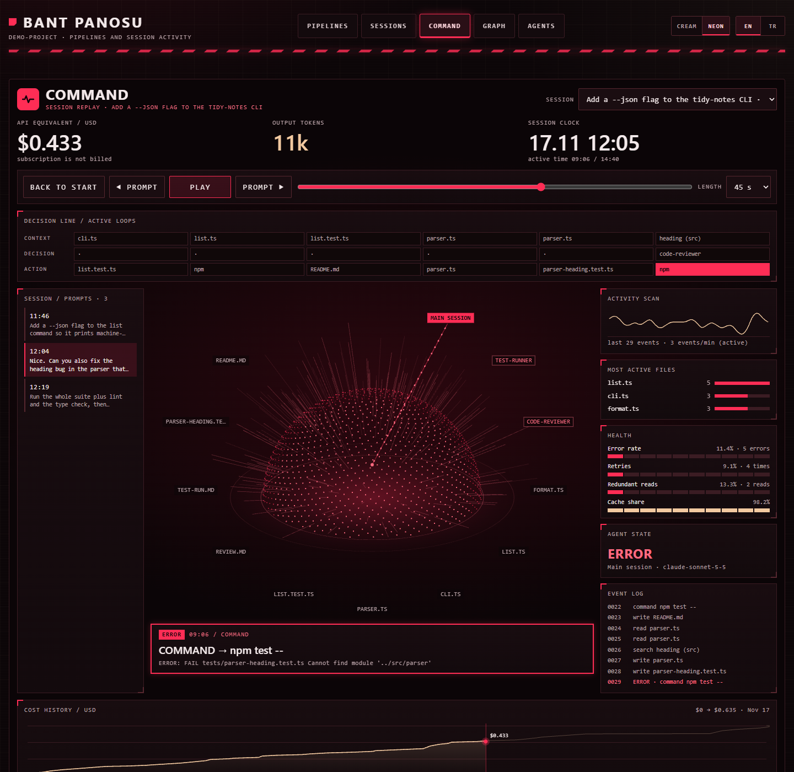
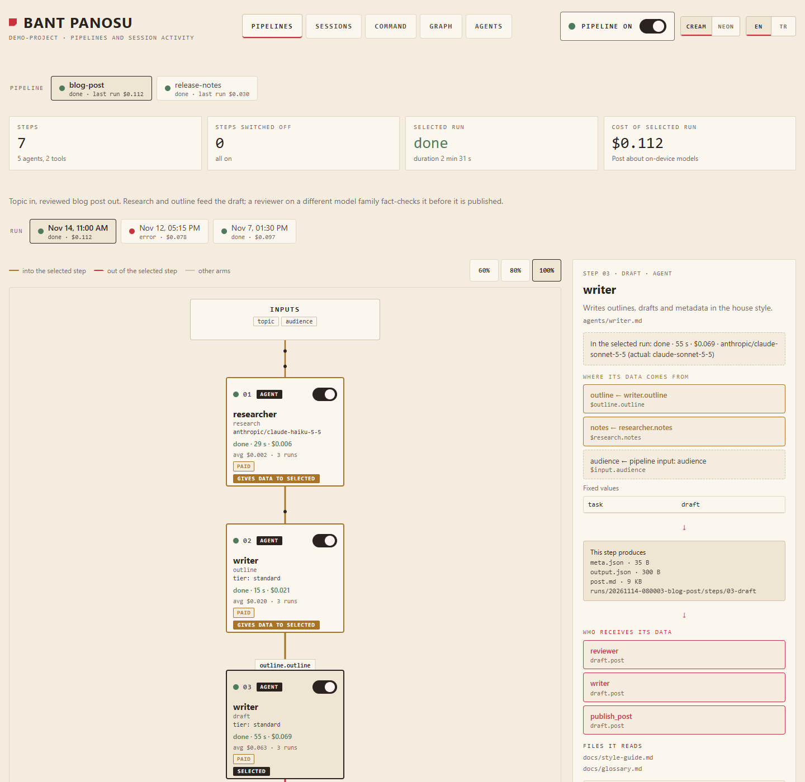
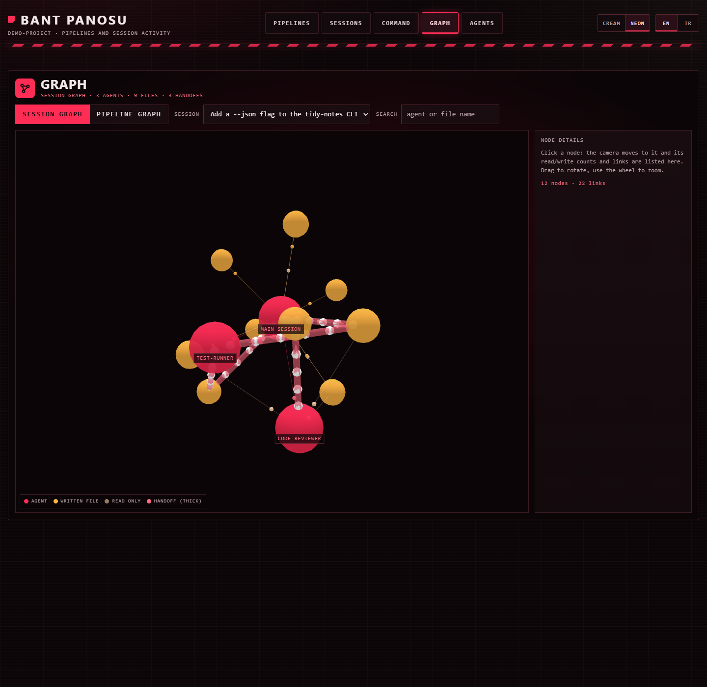

A free, local dashboard that shows what your Claude Code sessions and agent pipelines are doing: who read which file, which subagent ran on which model, what it cost, and where things went wrong.
Sessions: cost, agents, files read and written, handoffs

Command: replay a whole session, neon theme
What it shows
Live session: files read and written, commands run, by the main session and every subagent.
Subagents: model, tokens, API-equivalent cost and which files they handed to each other.
File heat map and redundant reads: a file re-read although nobody changed it.
Errors and retries in one list, session replay and compare two sessions.
Pipelines drawn as an octopus diagram: which step feeds which, with on/off switches and model changes that preview their impact.
3D graph of agents and files, and a read-only phone view on your local network.
Try it in 30 seconds
git clone https://github.com/sayiyla/bant-panosu
cd bant-panosu
npm install
npm run demo
The demo uses made-up sessions. Point it at your own project with npm start -- --project /path/to/project. It binds to 127.0.0.1 and sends nothing anywhere.

Pipelines, cream theme

3D graph, neon theme
Who made it
Bant Panosu is built by Sayıyla, a Turkish publication that tests AI tools with real numbers. We run our own content pipelines with Claude Code and made this board to see what they actually do.